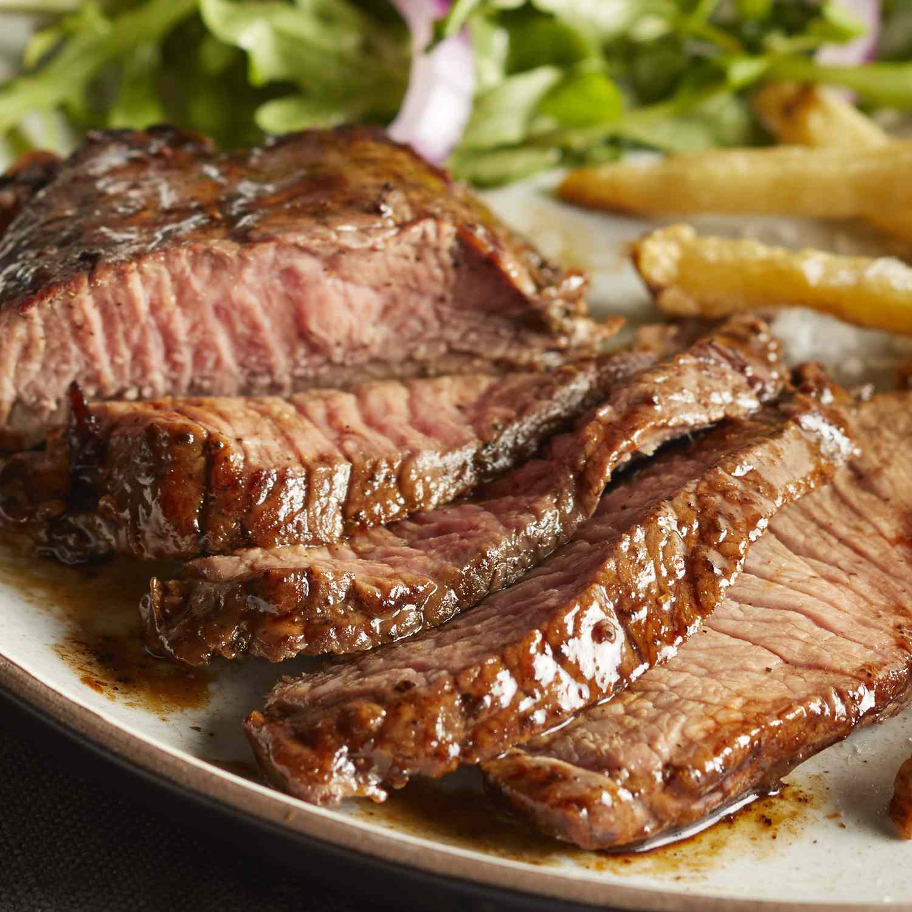

Steak

Description
This steak marinade is a family recipe that has been developed only over
the last 5 years. In this short time, it's made me famous in our close
circle, but until now I've never shared it with anyone.
Ingredients
- olive oil
- Soya sauce
- Worcestershire sauce
- Ribeye steak
Steps
-
Place olive oil, soy sauce, lemon juice, Worcestershire sauce, basil,
garlic powder, parsley, white pepper, minced garlic, and hot pepper
sauce in a blender; blend on high speed until thoroughly combined, about
30 seconds.
-
Stir in crushed tomatoes, tomato sauce, tomato paste, and water. Season
with sugar, 2 tablespoons parsley, basil, 1 teaspoon salt, Italian
seasoning, fennel seeds, and pepper. Simmer, covered, for about 1 ½
hours, stirring occasionally.
-
Pour the marinade into a resealable plastic bag. Add steak, coat with
the marinade, squeeze out excess air, and seal the bag. Marinate in the
refrigerator for up to 8 hours.
-
Remove steak from the marinade and shake off excess. Discard the
remaining marinade. Cook or grill steaks to desired doneness.
-
All that flavorful marinade doesn't have to go to waste, though: You can
make it safe-to-eat by boiling the liquid for several minutes. This
process will also reduce the liquid, resulting in a thick sauce that'll
work well with your freshly cooked steak.